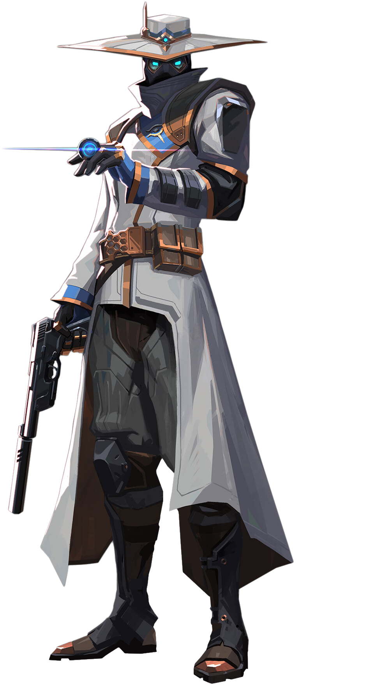

CYPHER
Sentinel
The Moroccan information broker,
Cypher is a one-man surveillance network who keeps tabs on the enemy's every move.
no secret is safe. No maneuver goes unseen. Cypher is always watching.

Skills
CYBER CAGE
INSTANTLY toss the cyber cage in front of Cypher.
Activate to create a zone that blocks vision
and slows enemies who pass through it.
COST: 200 , Charges: 2
SPYCAM
EQUIP a spycam. FIRE to place the spycam at the targeted location..
RE-USE this ability to take control of the camera’s view.
While in control of the camera, FIRE to shoot a marking dart.
This dart will reveal the location of any player struck by the dart.
COOLDOWN 45 Seconds
TRAPWIRE
EQUIP a trapwire. FIRE to place a destructible and covert tripwire at the targeted location
creating a line that spans between the placed location and the wall opposite.
Enemy players who cross a tripwire will be tethered, revealed, and dazed after a short period if they
do not destroy the device in time.
This ability can be picked up to be REDEPLOYED.
COST: 200, Charges: 2
NEURAL THEFT
INSTANTLY use on a dead enemy player
in your crosshairs to reveal the location of all living enemy players.
COST: 7 points